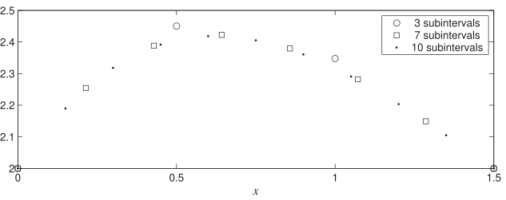

Long description: bvpexample331b

Alt text: A line graph showing the variation of a value plotted against \(x\) for three different numbers of subintervals: three, seven, and ten.
This description was generated by AI and has not been verified by a human. If you spot an error, please use the feedback link below.
- The graph displays three sets of data points connected by markers, representing a value plotted against the horizontal axis labeled \(x\), which ranges from \(0\) to \(1.5\).
- The legend indicates that open circles represent data computed with three subintervals, open squares represent data with seven subintervals, and solid dots represent data computed with ten subintervals.
- At \(x=0\), the values are approximately \(2.2\) for all three methods.
- The general trend for all methods is an initial increase as \(x\) increases from \(0\) to a peak value around \(x=0.5\), after which the values begin to decrease.
- At \(x=0.5\), the values are highest, approaching or exceeding \(2.4\) for all plotted methods.
- Between \(x=0.5\) and \(x=1.0\), the values decrease; for instance, at \(x=1.0\), the values are near \(2.3\) for the three and seven subintervals, and slightly lower for the ten subintervals.
- At \(x=1.5\), the values are around \(2.1\) for all three methods, showing a generally decreasing pattern across the interval shown.